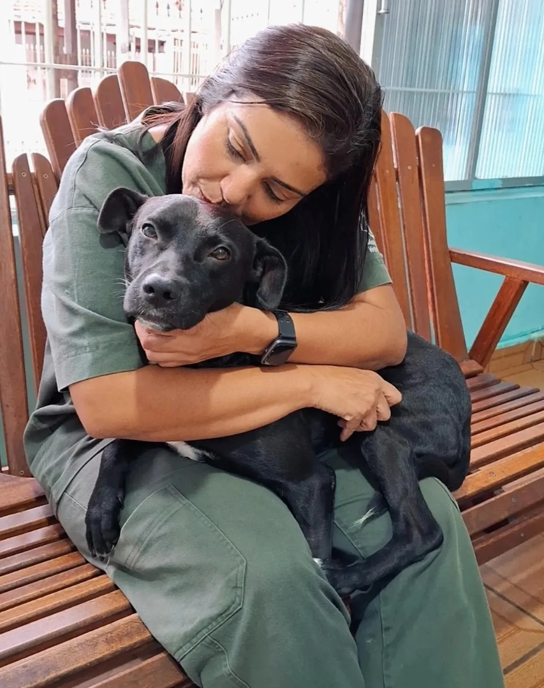

Clínica veterinária · Jardim Vila Formosa
Bem-vindo à Clínica Veterinária Mundo Pet
O cuidado que o seu pet merece, com carinho e excelência profissional.

- Segunda a Sábadodas 09h às 18h
- Atendimento domiciliarpor agendamento
- Exames na clínicaresultado em até 24 horas
- Vacinas importadaspara cães e gatos
Quem Somos
A Clínica Veterinária Mundo Pet está localizada na Praça Vieira do Couto, 38, no Jardim Vila Formosa, atendendo com dedicação toda a comunidade e seus animais de estimação. Nossa equipe é formada por profissionais qualificados e apaixonados pelo bem-estar animal.
Cuidado de verdade para o seu pet e sua família
Cada consulta é feita com carinho, respeito e atenção — porque cuidamos do seu pet como parte da família.
Nossos Serviços Principais
- Consultas VeterináriasNa clínica e a domicílio
- VacinaçãoVacinas importadas para cães e gatos
- CirurgiasCastração, cirurgias oncológicas e mais
- Internação 24 horasPara pacientes já em tratamento
- Banho & TosaPor agendamento, de segunda a sábado
- Exames Laboratoriais e de ImagemRealizados na própria clínica
Atendimento Domiciliar
Para tutores que preferem não se deslocar até a clínica, realizamos consulta domiciliar, com coleta de exames e aplicação de medicação quando necessário. O atendimento a domicílio é feito por agendamento e pode ocorrer fora do nosso horário comercial.
Orientações de Primeiros Socorros
O que fazer em caso de Engasgo
Ouça as orientações rápidas da nossa equipe sobre os primeiros cuidados com o seu pet antes de chegar até a clínica.
Solicite um Orçamento
Quer saber o valor de uma consulta, exame ou procedimento? Fale diretamente com a gente pelo WhatsApp ou pela nossa pagina de orçamento.